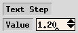

xfig 3.2.3 の新しい機能
GIF サポートについて
Unisys が、たとえフリーなプログラムであっても、
LZW 圧縮アルゴリズムの使用に対してロイヤリティを要求すると
言明したため、xfig から GIF LZW 圧縮アルゴリズムの
全ての痕跡を取り除きました。
xfig は GIF ファイルを取り込むために giftopnm、
及び ppmtopcx を呼び出すようになりました。
スクリーン・キャプチャは PCX ファイルを書き出します。
エクスポートは、fig2dev から ppmtogif を呼ぶことによって扱われます。
新しい機能
- 国際化 xfig を
韓国語環境 (ko_KR.eucKR) で動かした場合に、
フォント・パネルの
Times-Roman、及び Times-Bold に
韓国語を含めるようにしました。
from Jeon Hyoung-Jo and T.Sato.
- 韓国語 PostScript プリンタへの印刷を可能とするために、
fig2dev に韓国語用の
PostScript ヘッダ・ファイル
korean.ps を追加しました。
これは、Munhwa-Regular と MunhwaGothic-Bold、
もしくは HLaTeX-Myoungjo-Regular と HLaTeX-Gothic-Regular
の使用可能な方を使って印刷を行なおうとしますが、
環境によってはフォント名の書き換えなどが必要となるかも知れません。
from Jeon Hyoung-Jo and T.Sato.
- fig2dev の日本語用の
PostScript ヘッダ・ファイル
(japanese.ps) を、Ryumin-Light と GothicBBB-Medium ではなく、
HeiseiMin-W3 と HeiseiKakuGo-W5 を搭載した
PostScript プリンタへの出力も行なえるように変更しました。
from T.Sato.
- X サーバーがそれをサポートしている場合、
国際化 xfig を
Fig.international: true
Fig.latinKeyboard: true
Fig.encEncoding: false
のように設定することにより、
Latin-1 キャラクタを単純入力メソッド
(あるいはヨーロッパ向けキーボード) を用いて入力できるかも知れません。
from T.Sato, with suggestion from Carlos A M dos Santos.
- 佐藤 (T.Sato) の e-mail アドレスは
VEF00200@nifty.ne.jp
です。
日本語のマニュアルや国際化機能に関する質問など、
あるいは日本の方からの質問などは、
VEF00200@nifty.ne.jp (T.Sato)
宛に送って下さい。
- Depth マネージャ の追加。
それぞれの depth のオブジェクトを表示の対象とするかどうかを、
個々に、あるいはまとめて切り替えて、図の一部を選択的に隠すことができます。
- 負の x、及び y 座標へのスクロールを可能にしました。
これがデフォルトであり、
これは -dont_allow_neg_coord オプションや
Global Settings パネルで
禁止することができます。
- コマンド・パネルに、
File、Edit、View、及び Help の
メニューを置くようにしました。
これらのアクセラレータは、それぞれ
Meta-F、Meta-E、Meta-V、及び Meta-H です。
File メニューには、最近ロードされたファイルのリストも含まれます。
- Fig ファイルに含まれるコメントをオブジェクトのコメントとして保持し、
セーブに際して書き戻すようにしました。
コメントの入力や編集は、
オブジェクトに対する Edit パネル
で行なうことができます。
- ファイルの読み込みのための
File パネルから、
Fig ファイルを開くために
別の xfig プロセス
を起動することができるようにしました。
from T. Sato.
- POLYLINE や SPLINE などを2つに分割し、
あるいは2つの POLYLINE や SPLINE などを1つに結合するための、
JOIN/SPLIT 機能を追加しました。
また、2つの頂点のあいだを切断することによって BOX を POLYLINE に変換すること、
2つの端点を接続することによって開いた POLYLINE や SPLINE を
閉じることも可能です。
- Library パネルのリストを
ブラウズするために矢印キー (上、及び下のみ) を使えるようにしました。
- EPS やビットマップ・フォーマットでのエクスポートのために、
Border Margin
(fig2dev の -b オプション) を追加しました。
ユーザーは、余白を (おおむね) ピクセルで指定することができます。
これは、図の境界の周囲の背景の余白となります。
- プリンタへの出力や
エクスポートに際して、
背景の色を指定できるようにしました。
これは図の背景全体の色を設定するものであり、
全てのビットマップ・フォーマット、PostScript、EPS、PSTEX、
及び PDF に対して使用することができます。
これは、fig2dev に -g オプションによって引き渡されます。
- 複合オブジェクトの深さの
更新に際して、
それに含まれるオブジェクトの相対的な深さを維持したままで、
最も小さい深さを指定された値にするようにしました。
例えば、ある複合オブジェクトが深さ 3、8、及び 11 のオブジェクトを含んでおり、
この複合オブジェクトの深さが 2 に変更された場合には、
それに含まれるオブジェクトの深さはそれぞれ 2、7、及び 10 となります。
from T. Sato.
- プリンタを定義するために /etc/printcap を使っている
システムにおいては、xfig は
Print パネル でのプリンタの選択のために
プルダウン・メニューを
用意するようにしました。
- Export パネルに、
Smooth ボタンを追加しました。
これは、フォントの描画品質を改善するために fig2dev に
GhostScript がイメージを2倍の大きさで生成させるようにさせ、
その結果を pnmscale によって本来の大きさに縮小しますが、
これは隣り合ったピクセルの色の平均を取ることによって
イメージを滑らかにします。
from T. Sato.
- Export や Print に際してのエラーを、
エラー・メッセージ・ウィンドウに表示するようにしました。
- Edit パネルを、
編集するオブジェクトの上ではなく、その近くに配置するようにしました。
- 小さい画面に収めるために、xfig が必要に応じて
pwidth、pheight、及び but_per_row を自動的に設定するようにしました。
また、ポップアップ・ウィンドウの大きさや位置も必要に応じて調整して、
画面からのはみ出しをできる限り防ぐようにしました。
ユーザーが pwidth などを明示的に指定した場合には、
その自動的な設定はオーバーライドされます。
from T. Sato
- PDF export ドライバ
を追加しました。
(GhostScript ディストリビューションの ps2pdf を使用)
- fig2dev (そして xfig のメニュー) に、
CGM export ドライバ
(Computer Graphics Metafile) を追加しました。
from Philippe Bekaert <Philippe.Bekaert@cs.kuleuven.ac.be>
- より多くの用紙サイズ
(JIS B0〜B10、及び ISO A0〜A9) をサポートするようしました。
- Paste Object で、
マウスボタン2 (`place at orig posn') のクリックによって
オブジェクトを元の位置
(それが xfig のカット・バッファに移された時の位置)
に置けるようにしました。
- 値を増減する「スピナー」を、対象に応じて修正しました。
例えば、Fill intensity % は
スピナーの矢印をマウスでクリック毎に 5% づつ、
Text step は 0.1 づつ増減するようになりました。

- また、マウス・ボタンが増減のボタンの上で押し続けられた時には、
spinner_delay ミリ秒後から、
spinner_rate ミリ秒ごとに
リピートを行なうようにしました。
- Edit パネル で、
Fill Intensity、及び Fill Pattern を
イメージで表示するようにしました。
- ARC を、
- 円弧の中心
- 円弧の一方の端点の角度と半径
- 円弧の方向を決定するための2つめの点
- 最後の角度
の指定によって入力できるようにしました。
このモードは、マウスボタン2 (`center point') によって開始されます。
従来の方法も引続いて使用可能です。
from T. Sato
- 新しい配色
―― Fig-color.bisque.ad を使うことによって古い色を、
また Fig-color.classic.ad を使うことによってもっと古い色を
使うことも可能です。
- Web ページを用意しました。
- 以下のものを含む、
Global Settings パネル
を追加しました。
- ルーラーにマウスの位置を表示するかどうかを設定するチェックボックス
- 用紙の境界を表示するかどうかを設定するチェックボックス
- バルーン・メッセージを表示するかどうかを設定するチェックボックス
- 線の長さを表示するかどうかを設定するチェックボックス
- 頂点の番号を表示するかどうかを設定するチェックボックス
- イメージの色の数の上限の指定
- イメージ・エディタの指定
- スペル・チェッカの指定
- HTML ブラウザの指定
- PDF ビューアの指定
逆に、バルーンの ON/OFF のためのチェックボタンを
メッセージ領域から取り除きました。
- 2つの新しい "make" オプション：
- "make install.doc"
- 文書ファイル (すなわち、マニュアル・ページ、HTML、及び PDF ファイル)
のみをインストールする
- "make install.libs"
- xfig のオブジェクト・ライブラリのみをインストールする
- File パネル、
及び Export パネルの
Filename Mask に、空白で区切られた複数のワイルドカード・マスク
(例えば "*.fig *.fig.gz *.fig.[Zz]") を含められるようにしました。
- Export パネルで
Language が選択された時に、
Filename Mask をそれに応じて変更する
(例えば、GIF が選択されたならば *.gif に)
ようにしました。
従って、Fig*export_panel*mask*string は過去のものとなりました。
- 新しい形式の browser リソースでは、
``%f'' を探し、それをファイル名で置き換えるようにしました。
これと Netscape の -remote オプションを用いて、
xfig はマニュアル (HTML) を表示するために実行中の Netscape を用い、
それが実行中でなければ実行を開始することができるようになりました。
- pdfviewer リソースの ``%f'' も
ファイル名に置き換えられるようにしました。
- xfig は、まず正しい PostScript フォント名 (例えば AvantGarde) を試し、
それが失敗したならばバックアップのフォント名を試すようにしました。
これも失敗したならば、6x13 を使用します。
AvantGarde、Bookman、HelveticaNarrow、及び Palatino フォントは
Open Group (そしてそれ以前の X Consortium) からの X ディストリビューション
と共に配布されていなかかったため、以前の xfig は
それらのフォントをそれに近いものに置き換えるようになっていました。
現在は、xfig はまず正しいものを試し、
それが存在しない場合にはバックアップに切り替えます。
- GNU plotutils の新しい情報のため、
FIGAPPS ファイルを更新しました。
- Zoom が小さい時、ルーラーに、
より少ない目盛を表示するようにしました。
- Zoom が大きい時、ルーラーの
主な目盛のあいだにより多くのラベルを表示するようにしました。
- 新しいライブラリ・オブジェクト
- Computers ライブラリのフロッピー・ディスク・ライブラリ・オブジェクト。
- Networks ライブラリの "generic hardware" ライブラリ・オブジェクト。
from Tomi Ollila <Tomi.Ollila@tfi.net>
- ミラー、レンズ、光ファイバを含む、新しい Optics ライブラリ。
from Kai-MartinKnaak <kmk@abraxas.physik.uni-mainz.de>
- Computers ライブラリのコンピュータや端末、
Networks ライブラリのネットワーク・コンポーネント。
from T. Sato
- プレート、サポート、負荷、梁、座標系、及びトラスを含む、
新しい Structural Analysis ライブラリ。
Structural_Analysis/readme オブジェクト
(Examples/Libraries/Structural_Analysis/readme.fig)
に含まれる著作権情報もお読み下さい。
from Roman Putanowicz <putanowr@twins.pk.edu.pl>
- app-defaults ファイルがない、あるいは古い場合の、
より解説的なエラー・メッセージ。
- フォントが ISO8859-1 エンコーディングであるという制約の解除。
これは、例えば ISO646.1991
(スケーラブルな Schumacher フォントがそうである) を使えるようにします。
- 右、あるいは左揃えのテキストを含んだ複合オブジェクトの左右を反転する際、
それらのテキスト・オブジェクトの揃えも反転するようにしました。
(すなわち、右揃えのテキストは左揃えになり、その逆も同様となります。)
- ユーザーが xfig のメイン・ウィンドウの大きさを指定するために
Fig.geometry リソースを使用した場合、警告を出力するようにしました
―― -geometry オプション、もしくは
pwidth/pheight オプションかリソースのみを使うべきです。
- varargs.h の代わりに
ANSI の stdargs.h を使うようにしました。
from Roland Rosenfeld <roland@spinnaker.de>
- スペルチェック・コマンドの指定で、
ファイル名のために "%s" ではなく "%f" を用いるようにしました。
- xfig を任意のディレクトリにインストールするために
BINDIR を指定することができるようにしました。
(README ファイルを参照)
- ユーザーが取り込んだイメージのファイルを編集するために
Edit Image ボタンを押した時に、
xfig のウィンドウをアンマップしないようにしました。
- オブジェクトの回転角度を実数で指定できるようにしました。
from Marc Joosen <marcj@historia.et.tudelft.nl>
- スペルチェッカと
Search & Replace パネルを、
より便利にしました。
- 新しい Zoom to fit canvas 機能 ―
キャンバス上でのアクセラレータ Ctrl-Z は、
図がちょうどキャンバスに収まるようにズームします。
Zoom ダイアログの
Fit to canvas ボタンや、
View メニュー の
Zoom to Fit canvas も、同じ機能を持ちます。
- 開かれた複合オブジェクトを閉じた際に、
OPEN COMPOUND が
選択されるようにしました。
- SHIFT キーを押した状態でマウスボタン2でオブジェクトをクリックした場合、
そのオブジェクトに付けられたコメントを
ポップアップに表示する
ようにしました。
- 左右のマウスボタンを入れ換えたマウスのために、
マウス機能インジケータ
のメッセージを反転させる、-flipvisualhints オプション
(Fig.flipvisualhints リソース) を追加しました。
- 取り込めるイメージ・フォーマットの追加 ― TIFF、及び XPM。
- TEXT FLAGS を設定するための、
-hiddentext、及び -rigidtext オプションの追加。
[ Contents |
Introduction |
Credits ]